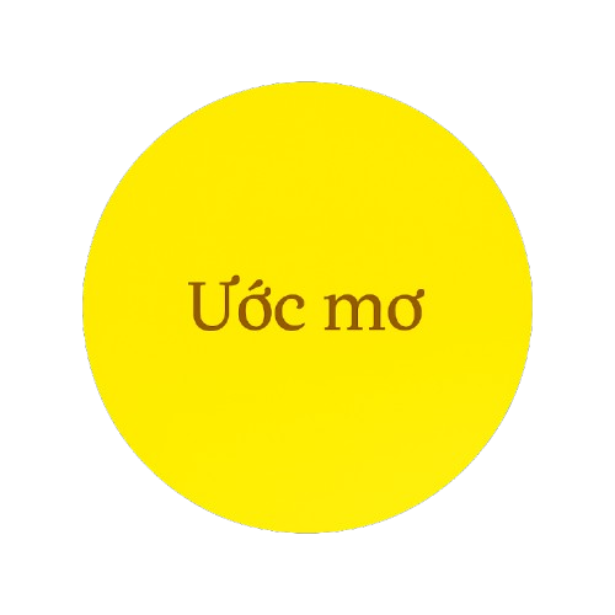
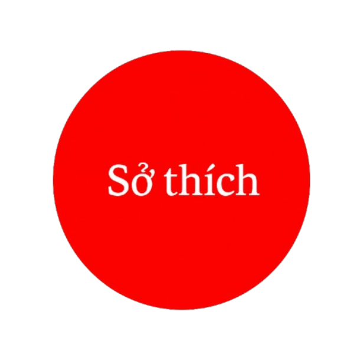
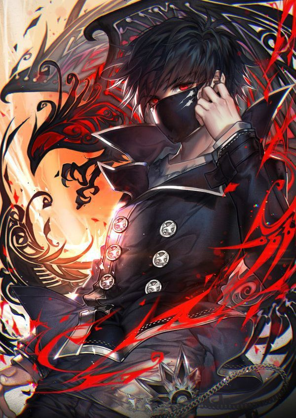

 |


Chào mọi người! Sau đây em xin tự giới thiệu về bản thân mình. Em tên là Trần Minh Tuệ. Em sinh ra và lớn lên tại Đồng Nai. Hiện nay em đang theo học tại trường THCS-THPT Tri Thức. Em là học sinh lớp 12D. Sở thích của em là chơi thể thao, coi phim. Ở trường em học giỏi nhất môn Toán và em được đại diện trường tham dự kỳ thi chọn học sinh giỏi cấp thành phố môn Toán lớp 12. Bố em năm nay ngoài 40 tuổi và đang là một kỹ sư cầu đường. Công việc của bố rất vất vả. Em cảm thấy tự hào khi là con trai của bố. Mẹ em là một giáo viên tiểu học. Mẹ rất hiền dịu và xinh xắn. Mẹ em rất đảm đang, vừa giỏi việc nhà vừa giỏi việc trên trường. Em chơi thể thao rất tốt đặc biệt là môn bóng rổ và bóng đá. Ước mơ của em là trở thành một nhà khoa học. Em đang cố gắng học thật giỏi để thực hiện ước mơ của mình. Gia đình em còn một người anh trai. Anh trai em hiện đang đi du học Pháp ngành truyền thông. Anh trai em rất đẹp trai và tốt bụng. Em rất tự hào khi có người anh như vậy. Trên trường em hay tham gia các câu lạc bộ của trường như: câu lạc bộ phát thanh, câu lạc bộ tiếng anh,... Em rất tích cực trong việc tổ chức các hoạt động tình nguyện, chung tay xây dựng một môi trường lãnh mạnh, xanh, sạch, đẹp.
Facebook các bạn cùng lớp: